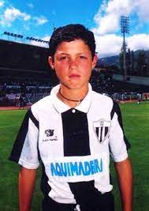
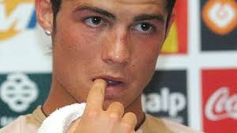

Infancia e inicios
Cristiano Ronaldo dos Santos Aveiro nació en São Pedro, Funchal, en la isla portuguesa de Madeira, y creció en la área de Santo António, uno de los barrios más pobres de Portugal. Es el cuarto y más joven hijo del matrimonio entre Maria Dolores dos Santos Viveiros (n. 1953), una cocinera, y José Dinis Aveiro (1954-2005), un jardinero municipal y utilero. Su bisabuela paterna, Isabel da Piedade, era de la isla de São Vicente, Cabo Verde. Tiene un hermano mayor, Hugo (n. 1975) y dos hermanas mayores, Elma (n. 1973) y Liliana Cátia "Katia" (n. 1977), quien es una cantante.Su madre reveló que cuando estaba embarazada de él quería abortarlo, debido a la adicción al alcohol que tenía su padre, la mala situación económica de la familia y porque ya tenía demasiados hijos. Sin embargo, su médico se negó a realizar el procedimiento. Cristiano se crio en una familia católica y en un hogar de malas condiciones, durmiendo en la misma habitación junto a todos sus hermanos.

Comenzó a destacar entre sus compañeros del Andorinha, su primer club y donde trabajaba su padre como utilero. Tenía como ídolos a sus compatriotas Rui Costa, Fernando Couto y Luís Figo. Al cumplir los diez años, los grandes equipos de Madeira, C. S. Marítimo y C. D. Nacional, ya se habían interesado en su contratación. Finalmente se incorporó a las filas del Nacional, donde continuó con su progresión, convirtiéndose en una de las más brillantes promesas del fútbol portugués. En 1997, realizó una prueba de tres días para fichar por el Sporting Clube de Portugal y finalmente dejó el C. D. Nacional para pasar a formar parte del club de Lisboa, la capital portuguesa, teniendo que mudarse solo y alejarse de su familia. Cristiano comentaría años después que esa fue una de las decisiones más difíciles de su vida, pero que mereció la pena para su carrera futbolística. En esos momentos el C. D. Nacional tenía una deuda de 450.000 escudos que quedaron saldados merced a la progresión y trayectoria cosechados por Ronaldo en su traspaso a Lisboa.
Una vez finalizado el traslado, comenzó su nuevo periplo en la disciplina del club lisboeta a partir de la temporada 1997-98. En la cantera dirigida por Leonardo Véliz le asignaron, junto al resto de sus compañeros —entre ellos Ricardo Quaresma y Hugo Viana—, psicólogos, tutores personalizados que le orientaban en sus estudios y médicos que observaban su crecimiento físico, lo que contribuyó a su formación como persona y futbolista.Cuando tenía quince años, fue diagnosticado un problema de corazón que pudo haberle forzado a retirarse de jugar a fútbol. El Sporting de Lisboa informó a su madre sobre el problema, quien, consciente de los riesgos, le dio permiso para ir al hospital. A continuación, se sometió a una operación en la que se analizó a través de cirugía láser el área del corazón que estaba causando el problema. La cirugía se realizó por la mañana y Cristiano fue dado de alta del hospital la misma tarde y pocos días después volvió a entrenar sin problemas.
